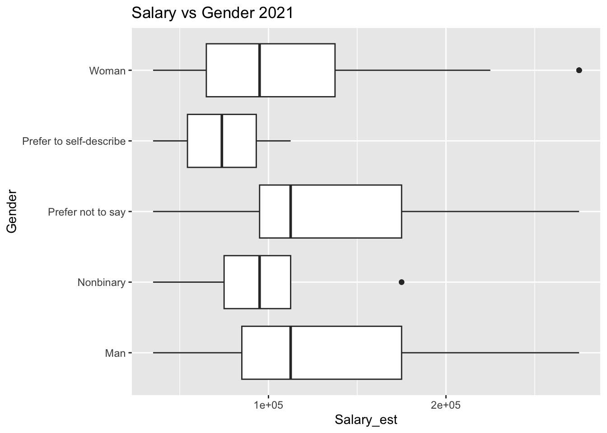
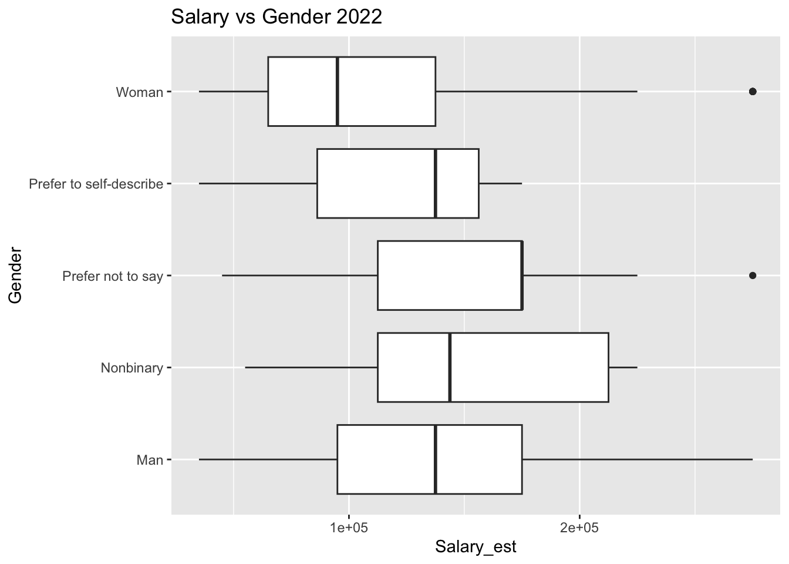
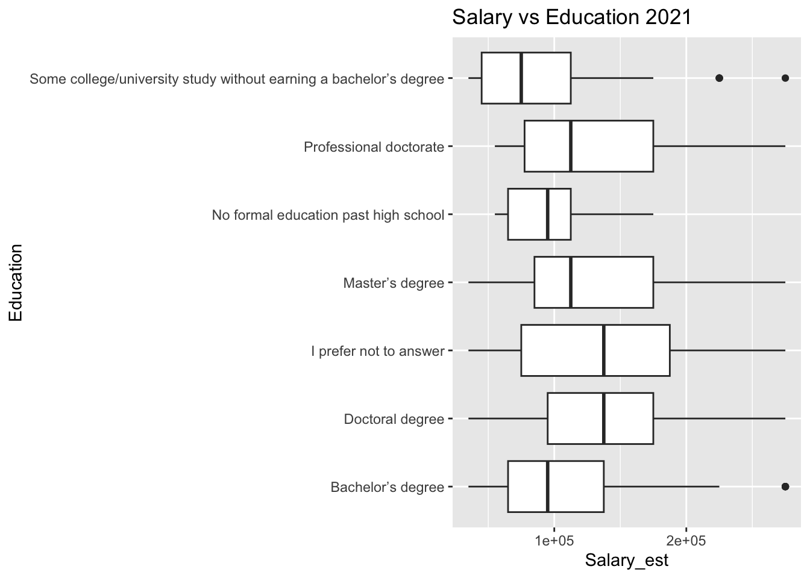
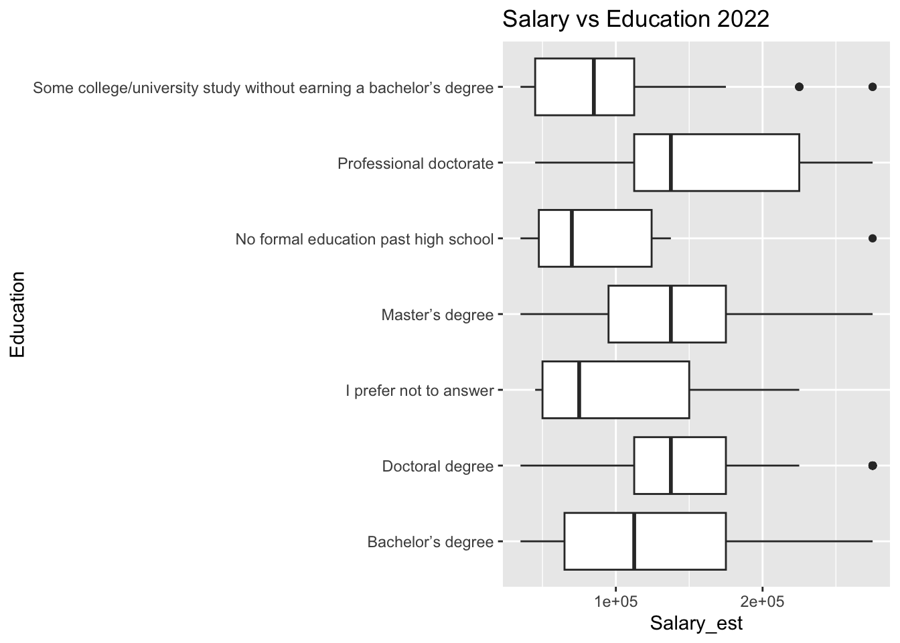
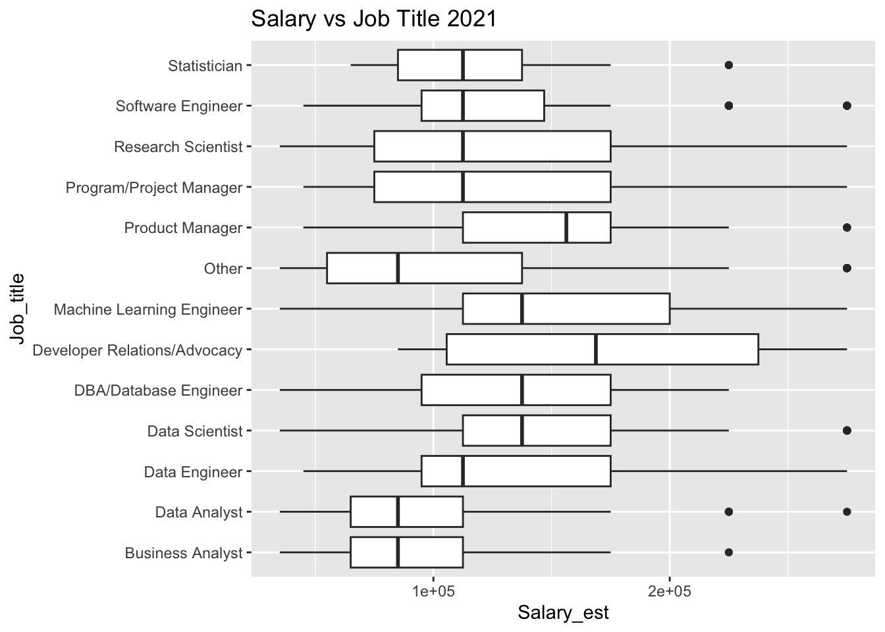
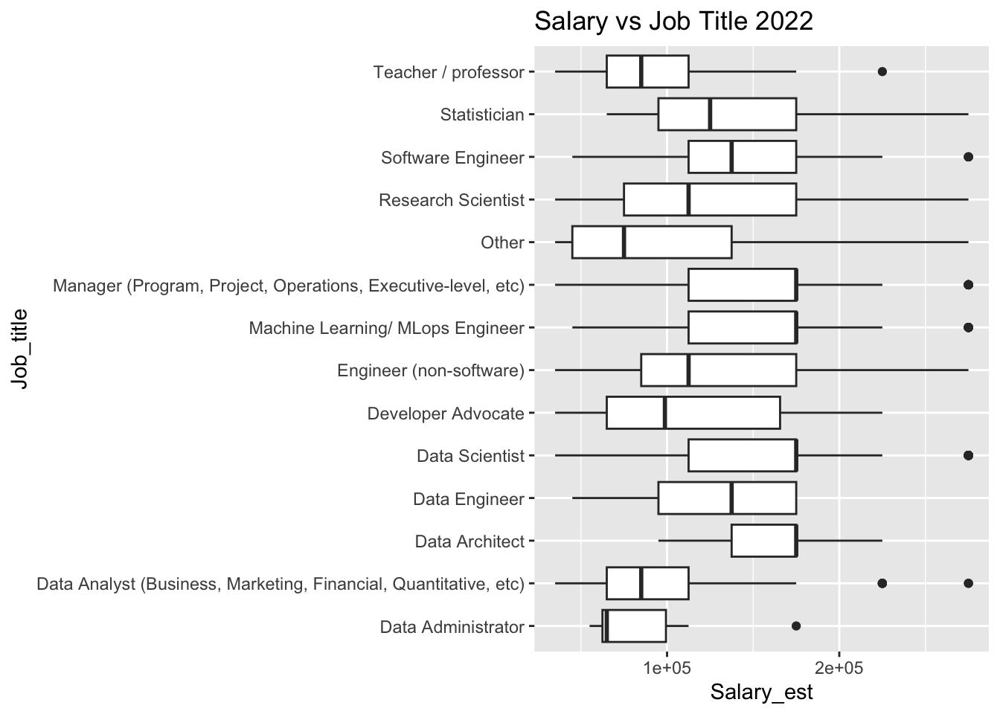
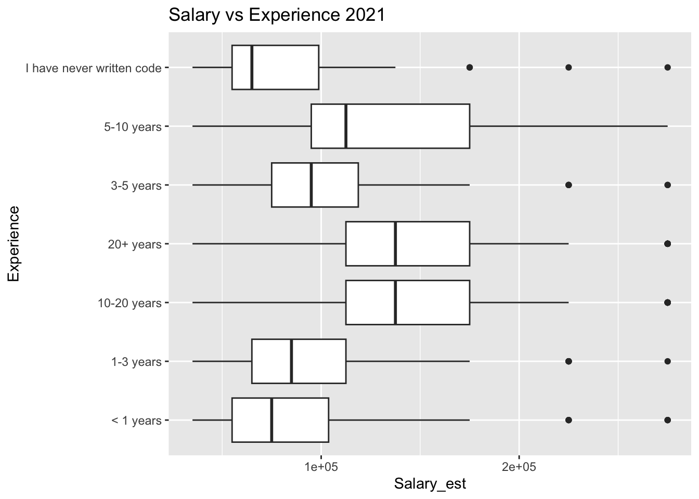
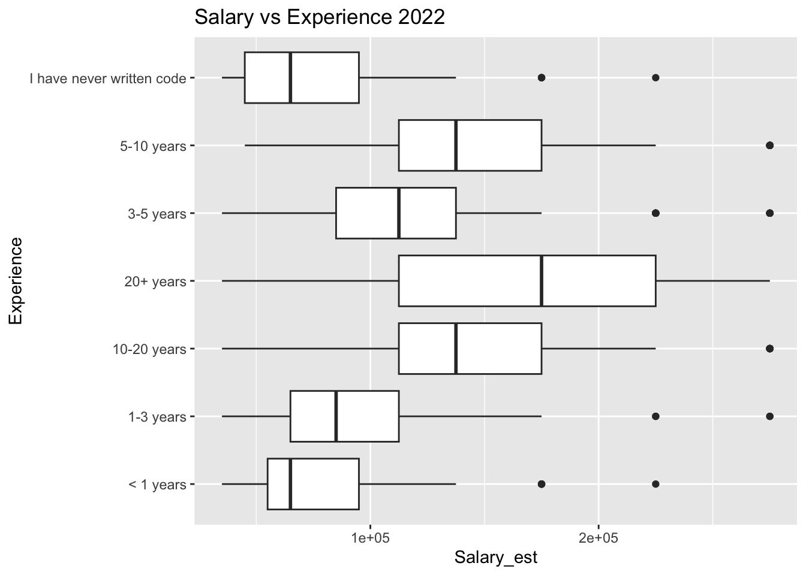

Code
```{r}
#| warning: false
#| code-fold: true
library(dplyr)
library(tidyr)
library(ggplot2)
library(caret)
library(fastDummies)
library(randomForest)
```In this project we will try to analyze and predict the salary of US data scientists. Our analysis is based on the publicly available analysis in Kaggle. Our main aim is first to reproduce the results of the original analysis using R and then improve the study by updating the data and adding Random Forest for the prediction.
The original analysis was built on 2021 Kaggle Machine Learning & Data Science Survey. This is the result of survey conducted by Kaggle on people who work with data. Only people who works in US was selected in this analysis as a subset for us to get a better insight about salary as the salary ranges are different from country to country. We also use 2022 Kaggle Machine Learning & Data Science Survey data as a newer version of original data.
Operating System:
Tools used:
Following libraries are used in the analysis
```{r}
#| warning: false
#| code-fold: true
library(dplyr)
library(tidyr)
library(ggplot2)
library(caret)
library(fastDummies)
library(randomForest)
``````{r}
data_old <- read.csv('../Models/Data/kaggle_survey_2021_responses.csv', encoding = 'UTF-8')
```data_old is 2021 Kaggle Machine Learning & Data Science Survey. It consists of 25,973 responses. Responses to each question saved either as a column with some categories or as a binary variable.
```{r}
data_new <- read.csv('../Models/Data/kaggle_survey_2022_responses.csv', encoding = "UTF-8")
```data_new is 2022 Kaggle Machine Learning & Data Science Survey. It consists of 23,997 responses. Responses to each question saved either as a column with some categories or as a binary variable. There are some differences in the order of questions and in available answers.
In original analysis not all available variables are used for predicting the salary. Only responses from US and following variables are used in this analysis:
```{r}
# Removing the raw which has questions
df_old <- data_old[-1, ]
df_new <- data_new[-1, ]
# Selecting only necessary variables
df_old <- df_old[, c(2:20, 128)]
df_new <- df_new[, c(2:4, 25, 146, 30:45, 159)]
cols <- c('Age', 'Gender', 'Country_of_residence', 'Education', 'Job_title', 'Experience',
'Python', 'R', 'SQL', 'C', 'C++', 'Java', 'Javascript', 'Julia', 'Swift',
'Bash', 'MATLAB', 'None', 'Other', 'Salary_range')
colnames(df_old) <- cols
cols <- c('Age', 'Gender', 'Country_of_residence', 'Education', 'Job_title', 'Experience',
'Python', 'R', 'SQL', 'C', 'C#', 'C++', 'Java', 'Javascript', 'Bash','PHP', 'MATLAB',
'Julia', 'Go', 'None', 'Other', 'Salary_range')
colnames(df_new) <- cols
# Selecting only responses USA
df_old <- df_old[df_old$Country_of_residence == 'United States of America', ]
df_new <- df_new[df_new$Country_of_residence == 'United States of America', ]
```There are some missing values in Salary_range column. We should exclude them from the data. Moreover, salary is given as a range, it is string variable. For a better prediction, we convert it to numeric variable. We create two variable from Salary_range column:
Salary_min: minimum salary in that range;Salary_max: maximum salary in that range.Then we created Salary_est variable which is a average salary in that range. And in the final step, we are selecting only salaries between $30K and $300K for eliminating the extreme values in data.
```{r}
# Removing missing values from data
df_old <- df_old[df_old$Salary_range != "", ]
df_new <- df_new[df_new$Salary_range != "", ]
# Converting Salary_range variable into two numeric variable
temp1 <- strsplit(df_old$Salary_range, '-', fixed = TRUE)
df_old$Salary_min <- sapply(temp1, '[', 1)
df_old$Salary_max <- sapply(temp1, '[', 2)
temp2 <- strsplit(df_new$Salary_range, '-', fixed = TRUE)
df_new$Salary_min <- sapply(temp2, '[', 1)
df_new$Salary_max <- sapply(temp2, '[', 2)
# Cleaning and converting those columns to numeric variable
replace_symbols <- function(x) {
gsub(',', '', gsub('$', '', gsub('>', '', x), fixed = TRUE))
}
df_old$Salary_min <- as.integer(replace_symbols(df_old$Salary_min))
df_old$Salary_max <- as.integer(replace_symbols(df_old$Salary_max))
df_new$Salary_min <- as.integer(replace_symbols(df_new$Salary_min))
df_new$Salary_max <- as.integer(replace_symbols(df_new$Salary_max))
# Adding a number for a maximum range
df_old$Salary_max <- replace_na(df_old$Salary_max, 1000001)
df_new$Salary_max <- replace_na(df_new$Salary_max, 1000001)
# Calculating Salary_est variable
df_old$Salary_est <- (df_old$Salary_min + df_old$Salary_max + 1) / 2
df_new$Salary_est <- (df_new$Salary_min + df_new$Salary_max + 1) / 2
# Selecting salary only in speicified range
df_old <- df_old[df_old$Salary_est > 30000 & df_old$Salary_est < 300000, ]
df_new <- df_new[df_new$Salary_est > 30000 & df_new$Salary_est < 300000, ]
```Programming values are not coded correctly in the data as a binary variable. We are correcting that by replacing column values with 0 and 1. Moreover there are some differences in the answers of original and new data. Previously, PHP, C# and Go languages are coded under Other variable, however now they are given as a separate variable. For us to use the original model, we should also code them under Other variable.
```{r}
# Correcting binary variables
languages_old <- c('Python', 'R', 'SQL', 'C', 'C++', 'Java', 'Javascript',
'Julia', 'Swift', 'Bash', 'MATLAB', 'None', 'Other')
for (i in languages_old) {
df_old[[i]] <- ifelse(df_old[[i]] == i, 1, 0)
}
languages_new <- c('Python', 'R', 'SQL', 'C', 'C#', 'C++', 'Java', 'Javascript',
'Bash','PHP', 'MATLAB', 'Julia', 'Go', 'None', 'Other')
for (i in languages_new) {
df_new[[i]] <- ifelse(df_new[[i]] == i, 1, 0)
}
# Combining PHP, C# and Go under Other variable
df_new$Other <- df_new$PHP + df_new$`C#` + df_new$Go + df_new$Other
df_new$Other <- ifelse(df_new$Other >= 1, 1, 0)
df_new$PHP <- NULL
df_new$`C#` <- NULL
df_new$Go <- NULL
```Moreover, Swift is recorded under Other variable in new data. We will create additional dummy variable in the modelling stage with only 0s for the new data.. As in original data, we had only 18 positive answers for Swift, this addition will not create a significant impact.
For understanding the main trends and differences in two years’ survey, we built some box plots. The following graphs show the relationship of salary with gender, education, job title, and experience.
```{r}
ggplot(df_old, aes(x = Salary_est, y = Gender)) +
geom_boxplot() +
ggtitle('Salary vs Gender 2021')
ggplot(df_new, aes(x = Salary_est, y = Gender)) +
geom_boxplot() +
ggtitle('Salary vs Gender 2022')
```

In general, salaries of men are higher than women. Moreover, salary of men increased compared to 2021, while salary of women has not changed that much in 2022.
```{r}
ggplot(df_old, aes(x = Salary_est, y = Education)) +
geom_boxplot() +
ggtitle('Salary vs Education 2021')
ggplot(df_new, aes(x = Salary_est, y = Education)) +
geom_boxplot() +
ggtitle('Salary vs Education 2022')
```

In general, we observe an increase in overall salary for all education groups.
```{r}
ggplot(df_old, aes(x = Salary_est, y = Job_title)) +
geom_boxplot() +
ggtitle('Salary vs Job Title 2021')
ggplot(df_new, aes(x = Salary_est, y = Job_title)) +
geom_boxplot() +
ggtitle('Salary vs Job Title 2022')
```

There are some differences in job titles which will be solved in Modelling stage as well. We can observe that Managers, Machine Learning Engineers and Data scientists have higher salary than others in 2022 and they have increased compared to 2021.
```{r}
ggplot(df_old, aes(x = Salary_est, y = Experience)) +
geom_boxplot() +
ggtitle('Salary vs Experience 2021')
ggplot(df_new, aes(x = Salary_est, y = Experience)) +
geom_boxplot() +
ggtitle('Salary vs Experience 2022')
```

We can see an observable correlation between experience level with programming and the salary.
We will separate predictors and predicted variables for both data.
```{r}
X_old <- df_old[, !(names(df_old) %in%
c('Gender', 'Salary_range', 'Salary_min', 'Salary_max', 'Salary_est'))]
y_old <- df_old$Salary_est
X_old <- dummy_cols(X_old, select_columns = colnames(X_old), remove_first_dummy = TRUE)
X_old <- X_old[,-c(1:18)]
X_new <- df_new[, !(names(df_new) %in%
c('Gender', 'Salary_range', 'Salary_min', 'Salary_max', 'Salary_est'))]
y_new <- df_new$Salary_est
X_new <- dummy_cols(X_new, select_columns = colnames(X_new), remove_first_dummy = TRUE)
X_new <- X_new[,-c(1:17)]
```We add job title Teacher/Professor and Engineer (non-software) to Other and remove them as we do not have that column in original model.
```{r}
X_new$Job_title_Other <- X_new$`Job_title_Teacher / professor` +
X_new$`Job_title_Engineer (non-software)`
X_new$`Job_title_Teacher / professor` <- NULL
X_new$`Job_title_Engineer (non-software)` <- NULL
```The following step is matching the job titles. The columns should have named in the same way for the original model to be run. Moreover, we are adding Swift because of the reason we discussed above.
```{r}
colnames(X_new)[
which(names(X_new) == "Job_title_Data Analyst (Business, Marketing, Financial, Quantitative, etc)")
] <- "Job_title_Data Analyst"
colnames(X_new)[
which(names(X_new) == "Job_title_Data Architect")
] <- "Job_title_DBA/Database Engineer"
colnames(X_new)[
which(names(X_new) == "Job_title_Developer Advocate")
] <- "Job_title_Developer Relations/Advocacy"
colnames(X_new)[
which(names(X_new) == "Job_title_Machine Learning/ MLops Engineer")
] <- "Job_title_Machine Learning Engineer"
colnames(X_new)[
which(names(X_new) == "Job_title_Manager (Program, Project, Operations, Executive-level, etc)")
] <- "Job_title_Program/Project Manager"
X_new$Swift_1 <- 0
X_new$`Job_title_Product Manager` <- 0
```In this step we should split our original data into training and testing for predicting and evaluating. As we will apply original model to whole new data (2022 data), we do not split them.
```{r}
# Set the random seed for reproducibility
set.seed(1)
# Splitting to train and test set
train_indices <- createDataPartition(y_old, p = 0.7, list = FALSE)
X_train_old <- X_old[train_indices, ]
X_test_old <- X_old[-train_indices, ]
y_train_old <- y_old[train_indices]
y_test_old <- y_old[-train_indices]
```Original model was produced in Original Research.R file. Let’s load the model into our environment and predict the salary for our test set and new data.
```{r warning=FALSE}
# Loading original model
load("../Models/original_lm.RData")
# Predicting
y_pred_old <- predict(original_lm, newdata = X_test_old)
y_pred_new <- predict(original_lm, newdata = X_new)
```We will use 4 metrics to assess the model performance.
Mean Squared Error (MSE): MSE is a measure of the average squared difference between the predicted and actual values in a linear model. It is calculated by taking the average of the squared residuals, where a residual is the difference between the predicted and actual values. MSE gives higher weight to larger errors, making it more sensitive to outliers.Root Mean Squared Error (RMSE): RMSE is the square root of the MSE. It provides a measure of the average magnitude of the residuals in the original units of the target variable. RMSE is often preferred over MSE because it is in the same units as the target variable, making it more interpretable.R-squared (R2): R2 is a statistical measure that represents the proportion of the variance in the dependent variable (target variable) that can be explained by the independent variables (predictors) in a linear model. It ranges from 0 to 1, where 1 indicates a perfect fit. R2 provides an indication of how well the linear model captures the underlying relationship between the variables.Mean Absolute Error (MAE): MAE is a measure of the average absolute difference between the predicted and actual values in a linear model. It is calculated by taking the average of the absolute residuals, where a residual is the difference between the predicted and actual values. MAE gives equal weight to all errors, regardless of their magnitude. It is less sensitive to outliers compared to MSE.```{r}
# Evaluation of model performance on original test set
mse_old <- mean((y_test_old - y_pred_old)^2)
rmse_old <- sqrt(mean((y_test_old - y_pred_old)^2))
r2_score_old <- R2(y_pred_old, y_test_old)
mae_old <- MAE(y_pred_old, y_test_old)
# Evaluation of model performance on updated data
mse_new <- mean((y_new - y_pred_new)^2)
rmse_new <- sqrt(mean((y_new - y_pred_new)^2))
r2_score_new <- R2(y_pred_new, y_new)
mae_new <- MAE(y_pred_new, y_new)
# Combining results
mse <- c(mse_old, mse_new)
rmse <- c(rmse_old, rmse_new)
r2_score <- c(r2_score_old, r2_score_new)
mae <- c(mae_old, mae_new)
data_name <- c("Original data", "New data")
lm_results <- data.frame(data_name, mse, rmse, r2_score, mae)
lm_results
``` data_name mse rmse r2_score mae
1 Original data 2208440172 46994.04 0.2979574 36690.38
2 New data 2721621066 52169.16 0.2881017 39719.55For updating the process we also build Random Forest. Unlike previous model, we do not use Country_of_residence variable in our newly build model. Moreover, we also do not convert all variables to binary variable.
```{r}
# Removing Country_of_residence variable
df_old$Country_of_residence <- NULL
# Converting variables to factor variable
df_old$Gender <- as.factor(df_old$Gender)
df_old$Age <- factor(df_old$Age,
levels = c("18-21", "22-24", "25-29", "30-34", "35-39",
"40-44", "45-49", "50-54", "55-59", "60-69", "70+"),
ordered = TRUE)
df_old$Experience <- factor(df_old$Experience,
levels = c("< 1 years", "1-3 years", "3-5 years",
"5-10 years", "10-20 years", "20+ years",
"I have never written code"),
ordered = TRUE)
# Assinging final variables to rf_old
rf_old <- df_old[,-c(19,20,21)]
colnames(rf_old)[which(names(rf_old) == "C++")] <- "C_plus_plus"
``````{r}
df_new$Country_of_residence <- NULL
df_new$Gender <- as.factor(df_new$Gender)
df_new$Age <- factor(df_new$Age,
levels = c("18-21", "22-24", "25-29", "30-34", "35-39",
"40-44", "45-49", "50-54", "55-59", "60-69", "70+"),
ordered = TRUE)
df_new$Experience <- factor(df_new$Experience,
levels = c("< 1 years", "1-3 years", "3-5 years",
"5-10 years", "10-20 years", "20+ years",
"I have never written code"),
ordered = TRUE)
rf_new <- df_new[,-c(18,19,20)]
rf_new$Swift <- 0
colnames(rf_new)[which(names(rf_new) == "C++")] <- "C_plus_plus"
```Train test split
```{r}
train_indices <- createDataPartition(rf_old$Salary_est, p = 0.7, list = FALSE)
rf_train_old <- rf_old[train_indices, ]
rf_test_old <- rf_old[-train_indices, ]
``````{r}
# Building RF model
rf_model <- randomForest(Salary_est ~ ., data = rf_train_old)
# Predicting the salary
rf_predict_old <- predict(rf_model, rf_test_old)
rf_predict_new <- predict(rf_model, rf_new)
```We use the same metrics for evaluating the model performance.
```{r}
# Evaluation of model performance on original test set
mse_old <- mean((rf_test_old$Salary_est - rf_predict_old)^2)
rmse_old <- sqrt(mean((rf_test_old$Salary_est - rf_predict_old)^2))
r2_score_old <- R2(rf_predict_old, rf_test_old$Salary_est)
mae_old <- MAE(rf_predict_old, rf_test_old$Salary_est)
# Evaluation of model performance on updated data
mse_new <- mean((rf_new$Salary_est - rf_predict_new)^2)
rmse_new <- sqrt(mean((rf_new$Salary_est - rf_predict_new)^2))
r2_score_new <- R2(rf_predict_new, rf_new$Salary_est)
mae_new <- MAE(rf_predict_new, rf_new$Salary_est)
# Combining results
mse <- c(mse_old, mse_new)
rmse <- c(rmse_old, rmse_new)
r2_score <- c(r2_score_old, r2_score_new)
mae <- c(mae_old, mae_new)
data_name <- c("Original data", "New data")
rf_results <- data.frame(data_name, mse, rmse, r2_score, mae)
rf_results
``` data_name mse rmse r2_score mae
1 Original data 2467911948 49678.08 0.2677039 38469.24
2 New data 2813117074 53038.83 0.2540656 40881.27As a conclusion, Linear Model (original model) performed better than Random Forest in both data. Another model or more variables should be used in the analysis.
| Model | Data | mse | rmse | r2_score | mae |
|---|---|---|---|---|---|
| Linear Model | Original data New data | 2208440172 2721621066 | 46994.04 52169.16 | 0.2979574 0.2881017 | 36690.38 39719.55 |
| Random Forest | Original data New data | 2482091811 2825551774 | 49820.60 53155.92 | 0.2637662 0.2508684 | 38549.84 40908.85 |
We have not faced any significant challenges during the reproduction process. However, when we try to apply the same methodology to updated data, some unmatched variables created problems. As a further recommendation, it will be much better to use common variables for the analysis in this model.
ChatGPT (May 24 version) is used in the following part of this analysis: